{kind=link}
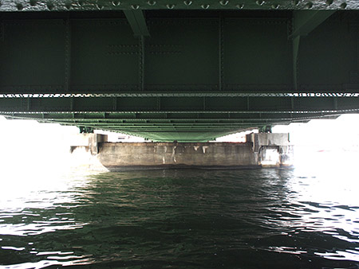
----------------------- 付近地下に都営地下鉄大江戸線が通っているが、上下線が厩橋を避けるように挟んで迂回している。戦時中は橋を爆撃された際に地下の鉄道が影響を受けないようにわざと避けて敷設するという鉄則に現代でもあえて従ったためとも、橋台に影響を与えないためともいわれているが、詳しくは不明である。 wikipediaより ------------------------- なにかが橋の下にあるな。うん。 気持ちよい隅田川沿い。 水辺大好き。 続いて蔵前橋{kind=link}
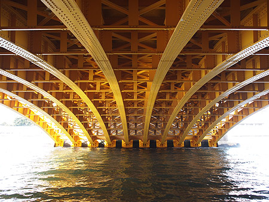
重機っぽい色は私の好み！ 電車だったら、ゆふDXぽい --------------------------------- 橋全体が稲の籾殻を連想させる黄色に塗装されている。 wikipediaより --------------------------------- これは橋？ 下を通っているとわかんないこともあるのね 帰ってしらべてようやくわかる。 蔵前専用橋{kind=link}
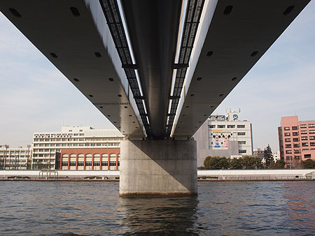
---------------------------------------- 日本で初めての洞道（通信線トンネル）専用橋で、水道橋も兼ねる。特徴として洞道内部の夏期の高温時対策のために換気用の窓が設置されている。橋上には立ち入りすることはできない wikipedia ---------------------------------------- 川辺を通る風は、もやもやのきもちを海の向こうまで流してくれてるみたい。 毎日乗ってる総武線が頭上をとおる。 総武線隅田川橋梁{kind=link}
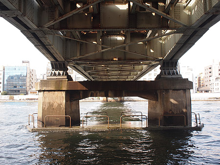
鉄道好きなものだから、真下で「うおーうおー」って興奮でしたわー。 ----------------------------------------- 上部構造は3径間で隅田川を渡り、連続プレートガーダーのうち側径間（1径間目・3径間目）にヒンジを設けたゲルバー桁を基本としている。 wikipedia----------------------------------------- 橋の専門用語ってかっこいいわ。 ただいまメンテナンス中。 両国橋{kind=link}
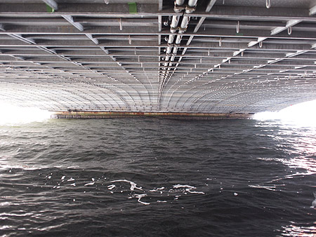
---------------------------------------------- 完成当時は言問橋・天満橋と共に「三大ゲルバー橋」とよばれ、技術的にも当時の最先端であった。 ---------------------------------------------- なになに！ゲルバーって！ wikipediaにも詳細がなーい！ と、思ったら、コトバンクにあった。 ---------------------------------------------- 単純橋と連続橋の特徴を併せもつ有連続橋。突げた橋ともいう。 けた構造ではゲルバーげた橋、トラス構造ではゲルバートラス橋という。ドイツ人・H・Gerber (1832～1912)の考案。 wikipedia ---------------------------------------------- むー？ ---------------------------------------------- 世界三大ゲルバー橋 ケベック橋、フォース鉄道橋、港大橋 にょろにょろとうねる首都高を超えて 新大橋{kind=link}
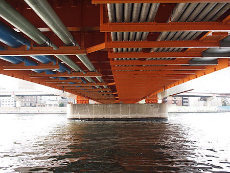
----------------------------------------------- 新大橋は関東大震災の際に隅田川の橋がことごとく焼け落ちる中で唯一被災せず、避難の道として多数の人命を救ったため、「人助け橋（お助け橋）」と称される。 wikipedia ---------------------------------------------- 唯一のこるって、どこかでなにかに選ばれているような感じがするね。 神の手で残してくれたような。 清洲橋{kind=link}
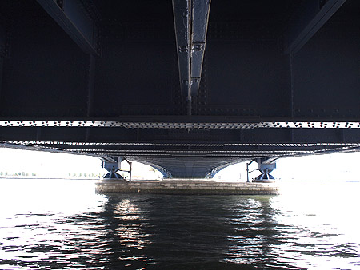
--------------------------------------------- 男女7人夏物語（主人公が清洲橋の脇のマンション〔中央区側〕に住んでいるという設定） wikipedia --------------------------------------------- 清洲橋の手前、江東区側には私が住んでみたい集合住宅があるですよ。 隅田川大橋{kind=link}
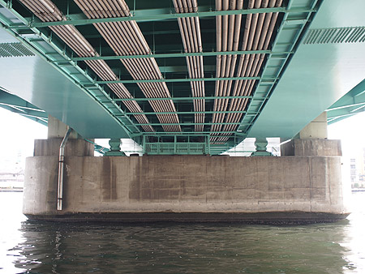
--------------------------------------------- 建設当時の風潮によるものか、機能性重視の設計デザインになっていることもあり、景観的に好ましくないとしての声も少なくない。 wikipedia -------------------------------------------- たしかに橋の下からの写真でも、隅田川大橋はときめきが少ないかも。 そうそう、昔、この近くのアパレル会社で仕事をしたことがあって、休憩時間はこの隅田川テラスに来てタバコを吸ってた。 すぐ横は読売新聞の穴あきマンション。 そして永代橋。{kind=link}
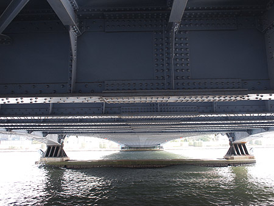
---------------------------------------------- 現存最古のタイドアーチ橋かつ日本で最初に径間長100mを超えた橋でもある。 ---------------------------------------------- 夜のライトアップがきれいー。 夜の橋でデートっていいかもね。あ、だからよくドラマとかで橋の上を使うのか！ 「君の名は」も、橋の上が重要だものね。 中央大橋{kind=link}
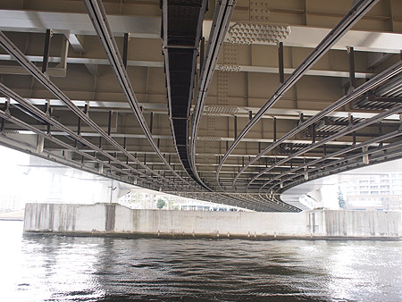
---------------------------------------------- 時節柄、機能やコスト一辺倒であった昭和の橋とは違い、都市景観やデザインに気遣いをもたせてある。夕刻から夜10時までは、白色の水銀灯と暖色系のカクテル光でライトアップされ美しい。バブル絶頂期ということもあり、分不相応なほどの贅沢な造りではあるが、まさに中央区のシンボルとしての「中央大橋」の名に恥じないものである。 ---------------------------------------------- バブルの遺産！ 橋の下もセクシーよね。ボディコンぽい。 佃大橋{kind=link}
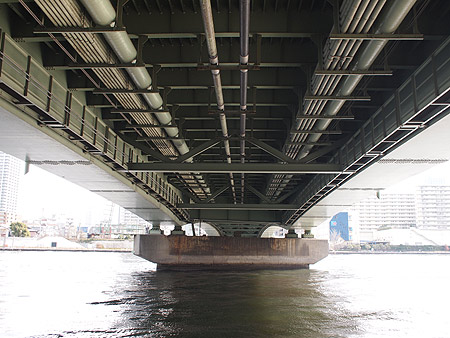
---------------------------------------------- 長さ40m、重量150トンに及ぶブロック別に当時日本最大の海上クレーン船にて一括で組み上げるという、大ブロック工法の先駆けともなる画期的な橋でもあった ---------------------------------------------- さてさて、今回はとりあえずここで終点に。 まだ先まであったけど築地市場に行きたくなっちゃった。 この先はまた次回。